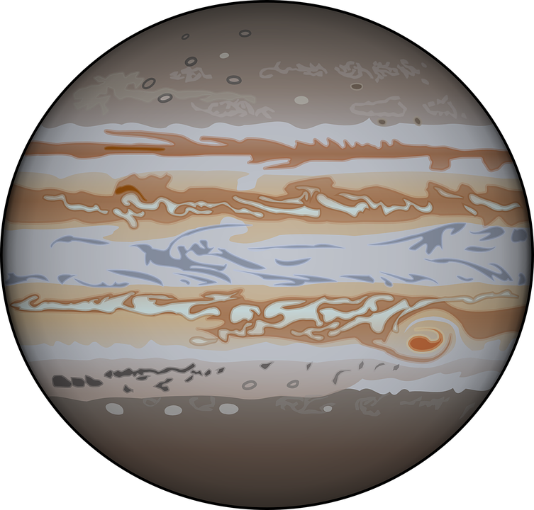
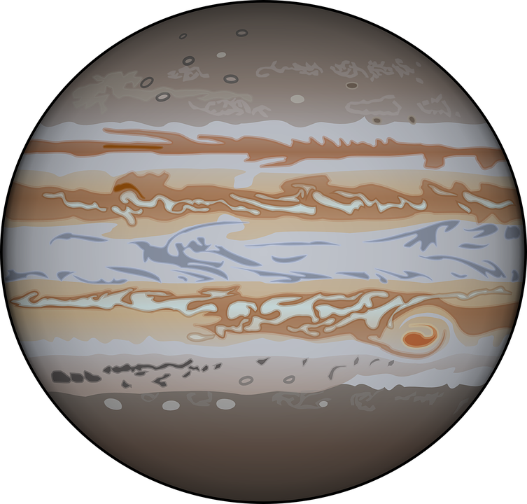

| Characteristics | Earth |
Mars |
Jupiter  |
Saturn |
|---|---|---|---|---|
| Mass (kg) | 5.98 x 1024 | 6.48 x 1023 | 1.90 x 1027 | 5.69 x 1026 |
| Diameter (km) | 12,756 | 6,787 | 142,800 | 120,660 |
| Mean Density (kg/m3) | 5,520 | 3,940 | 1,314 | 690 |
| Escape Velocity (m/s) | 11,200 | 5,000 | 59,500 | 35,600 |
| Average Distance From Sun (AU) | 1 | 1.524 | 5.203 | 9.537 |
| Rotation Period (Earth Days) | 1 | 1.026 | 0.41 | 0.44 |
| Revolution Period (Earth Years) | 1 | 1.88 | 11.86 | 29.46 |